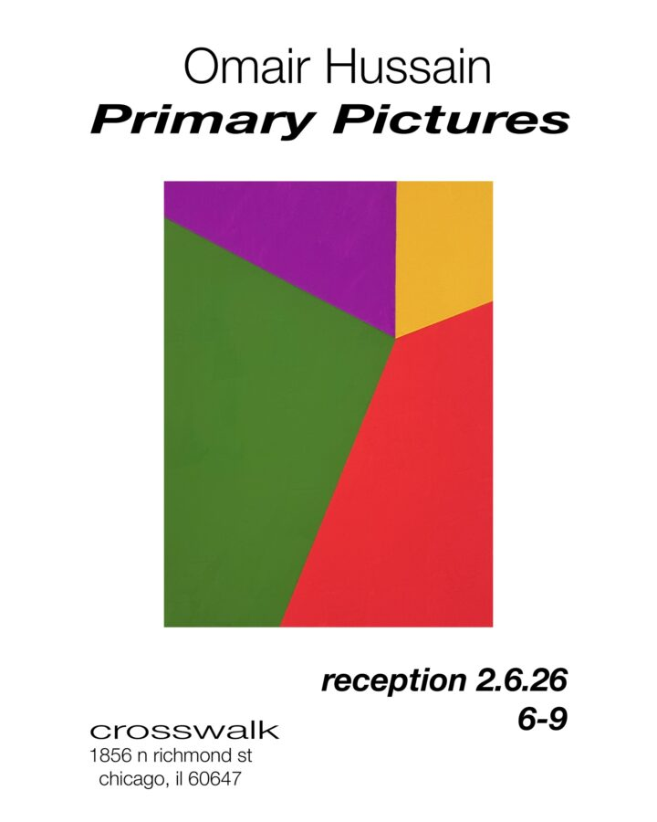

Primary Pictures
Hey, here’s a bio:
Omair Hussain was born in Cincinnati, Ohio and received his BFA and MFA from SAIC. His work attempts to inherit the problems and issues raised by the history of abstract painting. This history, for Hussain, is not a dead archive to be rummaged through, but a living force still tasking the present. His work seeks to address it’s tasks.